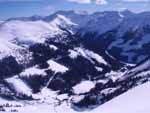

23.12.2012 Zum Sieg fehlten 22 Zentimeter
Florian Jud, Burgenlands bester Snowboardcrosser, erkämpfte sich sensationell am Sonntag in Cortina sein erstes Europacup Podest! Insgesamt waren vier 3x6=18er am Start!Mehr...
15.1.2012Historischer Sieg für Florian Jud bei SBX
Der 3x6=18er gewann den Snowboardcross in Sedrun (SUI) in beeindruckender Art und Weise. Damit ist er der erste Bgld. Snowboarder der je ein FIS-Rennen begonnen hat!Mehr...
1.12.2011MAMMUT Schulung 8.12
Das Hang loose bietet eine Schulung zu LSV und Airbag Rucksack an!Mehr...
 21.5.2011Fotos aus SBX Saison 2010/11
Checkt die Pics aus der Saison unserer Rennläufer, Mario, Basti, Motz & Flo: Gallery
21.5.2011Fotos aus SBX Saison 2010/11
Checkt die Pics aus der Saison unserer Rennläufer, Mario, Basti, Motz & Flo: Gallery 11.12.20103x6=18 Deal mit Hang Loose Onlineshop
Unser Parnter in Sachen Boardsport hat seit kurzem einen Onlineshop. Hier die Infos zum 3x6=18-DealMehr...
11.12.20103x6=18 Deal mit Hang Loose Onlineshop
Unser Parnter in Sachen Boardsport hat seit kurzem einen Onlineshop. Hier die Infos zum 3x6=18-DealMehr...
18.1.2011park n' ride 11 ABGESAGT
Die frühlingshaften Temperaturen, welche noch bis morgen Mittwoch andauern werden, haben dem Park stark zu gesetzt und verhindern eine künstliche Beschneiung. An vielen Stellen ist bereits das Gras zu sehen, ebenso sind diverse Obstacles von zu wenig Schnee umgeben. Daher ist es unmöglich bis Samstag den Park Konkurrenzfähig zu machen. Der Wetterumschwung am Donnerstag kommt zu spät…
25.10.2010Planneralm Eröffnungswochenende Dezember 2010
Der FSC 3x6=18 eröffnet die heurige Wintersaison wieder mit dem traditionellen Planneralm-Wochenende anfang Dezember. Von 8.-12.12. haben wir für Euch 20 Plätze in den Holzboxen reserviert.Mehr...
19.9.2010Besuch der ÖSV Kaderschmiede
Sebastian Jud - Burgenlands erster Snowboarder im Skigymnasium Stams - hat seine erste Schulwoche in Tirol hinter sich. Snowboard Referent Christoph Kuh besuchte seinen Schützling.Mehr...
25.1.2010Park n' Ride 10: Der Drehwurm im Joglland
Zweieinhalbfache Schrauben, doppelte Salti und perfekte Körperbeherrschung auf spiegelglatten Hindernissen: Wenn die Freestyle-Snowboarder und Freeskier nach St. Jakob im Walde kommen, dann glänzen die Augen jedes Sportfreundes.Mehr...
26.10.2009Start in die Snowboardsaison
Das BSV Snowboard-Team absolvierte am vergangenen Wochenende seine erste Trainingssession am Schnee. Das Kitzsteinhorn bot perfekte Bedingungen. Mit dabei unsere beiden Boardercrosser Florian und Sebastian Jud.Mehr...
 1.2.2009Bronze im SBX für Sebastian Jud
Nach seiner Goldmedaille im letzten Jahr holt der junge Boardercrosser bei der SBX ÖM in Fiss (Tirol) das nächste nationale Edelmetall ins Burgenland.Mehr...
1.2.2009Bronze im SBX für Sebastian Jud
Nach seiner Goldmedaille im letzten Jahr holt der junge Boardercrosser bei der SBX ÖM in Fiss (Tirol) das nächste nationale Edelmetall ins Burgenland.Mehr...
26.1.2009Park n Ride 09 - Probleme mit Gallery
Hi Leute! Ihr wartet sicher schon auf die Pics zur Challenge. Leider haben wir Probleme mit der Web-Gallery, daher können wir momentan keine Bilder hochladen. Stay tuned!
20.1.2009Park n' Ride 2009: Der Drehwurm im Joglland (+ Ergebnisse)
Die Akrobaten der Skipiste verzauberten St. Jakob im Walde mit atemberaubenden Tricks (inklusive Ergebnislisten).Mehr...
14.1.2009W I C H T I G: Park n' Ride 09
Alle Jugendlichen unter 18 Jahren brauchen eine Einverständniserklärung (113.7kB) der Eltern, welche unterschrieben zum Contest mitzubringen ist!Mehr...
 10.1.2009Park n' Ride 09 - Details
Am 17.1.2009 steigt die vierte Auflage der legendären Park n' Ride Slope Style Challenge in St. Jakob / Walde. Alle Infos dazu gibts hier!Mehr...
10.1.2009Park n' Ride 09 - Details
Am 17.1.2009 steigt die vierte Auflage der legendären Park n' Ride Slope Style Challenge in St. Jakob / Walde. Alle Infos dazu gibts hier!Mehr...
6.1.20091. FIS-Rennen - 1. Topleistung für Florian Jud
Nur 50 Hundertstel fehlten dem 15jährigen Mühlgrabner bei seiner
internationalen Premiere in Deutschland auf den Einzug ins Finale.
Mehr...
internationalen Premiere in Deutschland auf den Einzug ins Finale.
Mehr...
 14.12.2008Park n' Ride 09 - 17.1.2009
Right to come! Der East Park wird wieder von den Freestylern geshreddet werden. Als Vorgeschmack zieht euch das Video von 2008 rein. Weitere Infos folgen! Play Video
14.12.2008Park n' Ride 09 - 17.1.2009
Right to come! Der East Park wird wieder von den Freestylern geshreddet werden. Als Vorgeschmack zieht euch das Video von 2008 rein. Weitere Infos folgen! Play Video
 9.11.2008Ausschreibung Planneralm FSC Camp Feber 2009
Wieder einmal laden wir euch auf unser Wintersportcamp auf der Planneralm ein. Die mittlerweile legendäre Snowboard-, Ski- und Partywoche findet diesmal von 7.-14. Feber 2009 statt.Mehr...
Wieder einmal laden wir euch auf unser Wintersportcamp auf der Planneralm ein. Die mittlerweile legendäre Snowboard-, Ski- und Partywoche findet diesmal von 7.-14. Feber 2009 statt.Mehr...
 12.4.2008Sebastian & Florian Jud on Air
- so könnte man den Auftritt der Snowboard-Brüder aus Mühlgraben beim Slopestyle in ihrer "Homebase" auf der Planneralm bezeichnen.Mehr...
12.4.2008Sebastian & Florian Jud on Air
- so könnte man den Auftritt der Snowboard-Brüder aus Mühlgraben beim Slopestyle in ihrer "Homebase" auf der Planneralm bezeichnen.Mehr...
28.3.2008Jud Sebastian zweimal am Stockerl
Die BSV-Boarder Sebastian und Florian Jud, sowie Sascha Rogan gingen letztes Wochenende (21. & 22.03.) bei zwei SBX im tiefwinterlichen "Grünau im Almtal" (OÖ) an den Start.Mehr...
10.3.2008Florian Jud dominiert den Slope Style am Stuhleck
Ein neuer Rohdiamant des BSV-Snowboardteams ist bereit, um geschliffen zu werden. Florian Jud gewinnt den Slopestyle in der Klasse U-16 am Stuhleck.Mehr...
25.2.2008Bgld. Landesmeisterschaft - Banced Course
Am 1. März findet in St. Kathrein a. Hauenstein die Snowboard Landesmeisterschaft Alpin statt. Der Banced Course wird erstmals dafür als Disziplin herangezogen. Florian und Sebastian Jud werden die Fahnen des FSC 3x6=18 powered by Raiffeisenclub hoch halten! WER hat noch interesse hat: ANMELDUNG hier
19.2.2008Tourencamp Ischgl 2008
Das Tourencamp in Ischgl hat sich mittlerweile zum Highlight der Powderhounds entwickelt. Vom 9.-15.2. ließen ein paar 3x6=18er und ein paar auswärtige Kollegen die Wadeln glühen...Mehr...
Das Tourencamp in Ischgl hat sich mittlerweile zum Highlight der Powderhounds entwickelt. Vom 9.-15.2. ließen ein paar 3x6=18er und ein paar auswärtige Kollegen die Wadeln glühen...Mehr...
18.2.2008Parkn' Ride 2008 Video!!!!
Nach den Pics nun auch das Video des Parkn' Ride Contests endlich Online!
Quicktime Player erforderlich.
Check It Out Homies!!!
Play Video
Quicktime Player erforderlich.
Check It Out Homies!!!
Play Video
17.2.2008Kooperation mit „Atomic“ für BSV-Boarder
Florian Jud und Sascha Rogan (Fun Sport Club – Red Hot Chilli Güssing) haben mit der renomierten Firma „Atomic” einen neuen „Board-Partner“ gefunden.Mehr...
5.2.2008Stockerl für Florian Jud
Flo holt am Hochkar den 3. Platz. Sebastian landet auf dem 4. Endrang. Eine knappe Anreise ermögliche keine Besichtigung des Kurses sowie kein Training mehr, um so mehr ist die Leistung hervor zu heben.Mehr...
2.2.2008FSC Pics nun online
Hat etwas länger gedauert, aber gut Ding braucht halt, wie man so schön sagt. Dafür könnt ihr euch iaz in aller Ruhe die Pics vom Park n' Ride 08 geben. Ride on! Gallery
30.1.2008Park n Ride Ergebnis & Presseaussendung
FSC 3x6=18 schafft Unmögliches und bricht Rekorde:
Erstmals Snowboard und Freeski in St. Jakob/Walde gemeinsam im Slopestyle Wettbewerb!Mehr...
Erstmals Snowboard und Freeski in St. Jakob/Walde gemeinsam im Slopestyle Wettbewerb!Mehr...
28.1.2008Sebastian Jud holt Gold bei ÖM
Sensationelle Leistung des 3x6=18 Teamriders bei den österreichischen Meisterschaften in Vorarlberg. Auch sein Bruder Florian schlug sich tapfer und erreichte nach einem spektakulären Abflug Rang 7.Mehr...
 28.1.2008Erste Pics vom Park n' Ride
Es gab einige Fotografen beim Park n' Ride in St. Jakob. Einige haben ihre Fotos schon online gestellt! Seht selbst!Mehr...
28.1.2008Erste Pics vom Park n' Ride
Es gab einige Fotografen beim Park n' Ride in St. Jakob. Einige haben ihre Fotos schon online gestellt! Seht selbst!Mehr...
12.11.2007Planneralm Snowboardcamp 2008
Vom 2.-9. Feber 2008 steigt die dritte Inkarnation des legendären FSC Plannercamps. Wie im Feber 2007 werden wir wieder in den Holzboxen wohnen.Mehr...
24.1.2008Park n' Ride 08 - GESICHERT
Die Witterung der letzten Tage ließ den FSC 3x6=18 powered by Raiffeisenclub und die EastParkCrew ein wenig zittern, DOCH die Jungs haben sich reingehaut und somit steht dem Park n' Ride 08 nichts mehr im Wege! Rock n' Roll
6.1.2008Park n' Ride 09 - Details
Am 17.1.2009 steigt die vierte Auflage der legendären Park n' Ride Slope Style Challenge in St. Jakob / Walde. Alle Infos dazu gibts hier!Mehr...
16.12.2007Planner Tourenwochenende
Die Jungs und Mädl vom und um den FSC (Climb + Snowboard) waren von 7.-9.12. auf der Planneralm und haben den Weg zur Dornbuschhütte fürs Febercamp geebnet...Mehr...
Die Jungs und Mädl vom und um den FSC (Climb + Snowboard) waren von 7.-9.12. auf der Planneralm und haben den Weg zur Dornbuschhütte fürs Febercamp geebnet...Mehr...
19.11.2007FSC Snowboarder und Skifahrer in St. Jakob
Am 1.12. werden wir die Snowboardsaison in St. Jakob eröffnen. Mehr...
Am 1.12. werden wir die Snowboardsaison in St. Jakob eröffnen. Mehr...
3.3.2007park n' ride 07 ABGESAGT
Der für den 10. März 2007 angesetzte Park n' Ride 07, welcher gleichzeitig die Bgld. Snowboard LM im Freestyle darstellt und zur AUT Trophy zählt, muss nun endgültig ABGESAGT werden!Mehr...
31.1.2007Anreise Planneralm
Am Samstag, 10. Feber 2007 könnt Ihr ab 16.00 Uhr die Appartments beziehen. Reinhard "Reini" Wagner (Handy: 0650 3618 004) wird dann bereits vor Ort sein und euch dabei behilflich sein! Er hat auch die Zimmereinteilung bei sich. Hang loose kc
 29.1.2007park n' ride 07 ERNEUT VERSCHOBEN
Leider ist noch immer nicht genügend Schnee für den Park n’ Ride – Contest in St. Jakob i.W. vorhanden, daher erfolgt eine letzte Verschiebung. Neuer Termin
29.1.2007park n' ride 07 ERNEUT VERSCHOBEN
Leider ist noch immer nicht genügend Schnee für den Park n’ Ride – Contest in St. Jakob i.W. vorhanden, daher erfolgt eine letzte Verschiebung. Neuer Termin 10. März 2007
Mehr...
27.1.2007Parkshaper benötigt
Der Schnee ist da, iaz muss der East Park in St. Jabob i.W. nur mehr geshaped werden, um den Contest am kommenden Samstag, 3.2.2007 zu sichern! Wer die EPC bzw. den FSC 3x6=18 unterstützten möchte soll sich bei Christoph Kuh (0650 3618163) melden! Big Thx! Pray for more Powder... Hang loose
 13.1.2007park n' ride 07 VERSCHOBEN
Wegen der mehr als widrigen Schneelage wird der Park n’ Ride – Contest auf den
13.1.2007park n' ride 07 VERSCHOBEN
Wegen der mehr als widrigen Schneelage wird der Park n’ Ride – Contest auf den 3. Feber 2007
verschoben.Mehr...
16.12.2005park n' ride 07
Am Samstag, 27.1.2007 wird der F2 EastPark in St.Jakob i.W. erneut rocken, denn die Crew des FSC 3x6=18 powered by Raiffeisenclub lädt zur dritten Auflage des "park n' ride". Don't miss it!Mehr...
 1.1.20071. Rennen für Jud Brüder
Flo und Sebastian schlug sich beim ersten Rennen der Saison unter schweren Bedingungen wacker.Mehr...
1.1.20071. Rennen für Jud Brüder
Flo und Sebastian schlug sich beim ersten Rennen der Saison unter schweren Bedingungen wacker.Mehr...
23.9.2006Planneralm - Feber 2007
Im letzten Jahr gab's seid langen wieder mal ein Camp auf der Planneralm. Alle waren begeistert, daher wird der Club auch in den kommenden Semesterferien den Berg rocken! Mehr...
4.4.20064 Medaillen bei ÖM für den FSC
Sebastian und Florian Jud zeigten bei den Österreichischen Meisterschaften, dass sie den Vergleich mit den Boardern aus dem Westen keineswegs scheuen müssen!Mehr...
25.3.2006Jud Brüder erfolgreich bei SBX ÖMS
Die jungen Snowboarder des FSC 3x6=18 powered by Raiffeisenclub zeigten bei den Schülermeisterschaften im SBX in Fiss (Tirol), dass sie keineswegs den Vergleich mit ihren Konkurrenten aus dem Westen scheuen müssen.Mehr...
27.2.2006Snowboard-Alpinkurs Ischgl
Martin "Stonelover", Berti, Gusti und Chri waren von 19.2. bis 25.2. in Ischgl auf Alpinkurs. - Der Kurs war sooooo feeeett! Hier die ersten Pics.